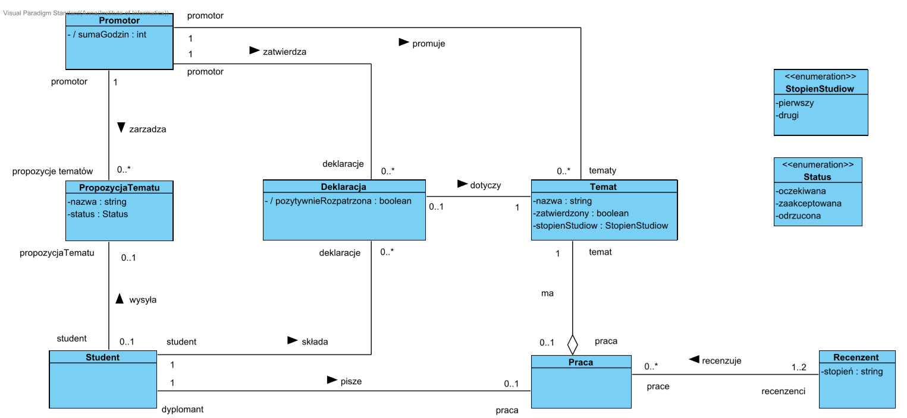
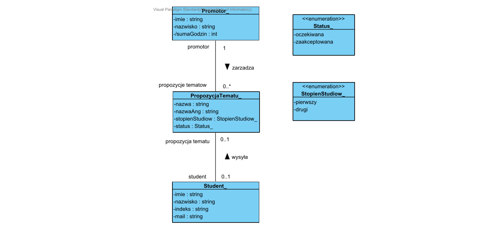
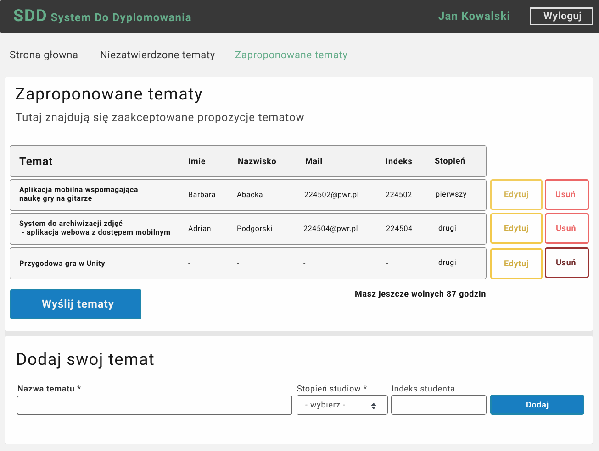
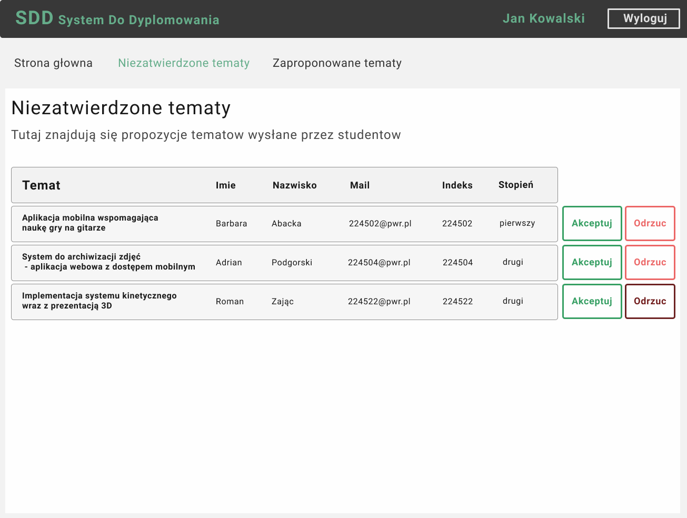
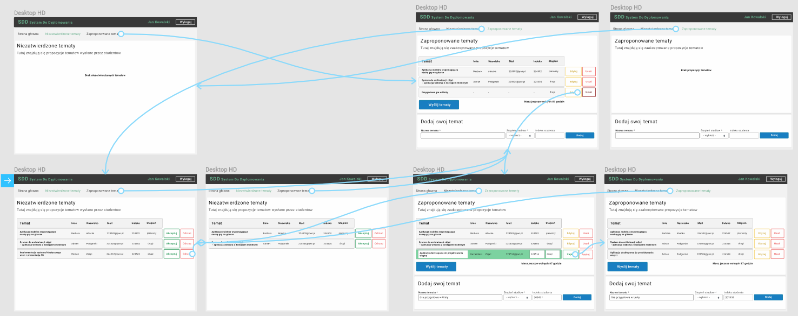

System Do Dyplomowania
SDD
Wizja systemu
Moim zadaniem było zaprojektowanie elektronicznego systemu, który zautomatyzowałby wszystkie czynności w procedurze dyplomowania, które były wcześniej wykonywane ręcznie.
Proces obejmuje I i II stopień kształcenia na Politechnice Wrocławskiej na Wydziale Informatyki i Zarządzania.
Część badawcza składała się z następujących czynności:
- Zebranie informacji dotyczących całego procesu dyplomowania na uczelni.
- Odkrycie problemów wynikających z obecnego systemu.
- Zebranie wymagań użytkowników.
- Spisanie pomysłów rozwiązań problemów.
- Opisanie przyszłych cech elektronicznego systemu, które rozwiazałyby problemy w obecnym systemie.
Użytkownicy
Aby móc usprawnić system musiałam zebrać informacje na temat osób, które są zaangażowane w proces dyplomowania. Należą do nich studenci, nauczyciele akademiccy, dziekan, pełnomocnik dziekana do spraw kierunku studiów, rada wydziału, sekcja dyplomowania, kierownik katedry, przewodniczący i sekretarz komisji egzaminu dyplmowego.
Po analizie odpowiedzialności każdej z zaangażowanych osób wybrałam grupy użytkowników projektowanego systemu. Będą nimi:
- studenci,
- promotorzy,
- pełnomocnik dziekana,
- sekcja dyplomowania,
- kierownik katedry.
Ze względu na obszerność całego procesu dyplomowania skupiłam się na automatyzacji procesów związanych z wyborem oraz deklaracją tematów.
Istniejące problemy
Analiza obecnego rozwiązania oraz rozmowy z przyszłymi użytkownikami pozwoliły odkryć problemy - dzięki zebranym informacjom zaproponowałam rozwiązanie w projektowanym systemie.
Student
Problem: Znalezienie wolnego tematu.
Rozwiązanie: Dostępna wiedza z listą wolnych tematów.
Problem: Informacja o zmianie tematów.
Rozwiązanie: Dostępna akutalna wiedza, który student realizuje jaki temat.
Problem: Zbieranie podpisów przy wyborze tematu.
Rozwiązanie: Elektroniczne zatwierdzenie deklaracji przez promotora.
Promotor
Problem: Brak informacji o tym, czy promotor osiąga limit dyplomantów.
Rozwiązanie: Dostępna informacja o liczbie wolnych godzin. Powiadomienie o
osiągnięciu limitu.
Pełnomocnik dziekana
Problem: Wybór recenzenta.
Rozwiązanie: Dostępna wiedza o tym ile recenzent ma przypisanych prac, wiedza o stopniach naukowych recenzentów.
Sformułowanie wymagań
Poznanie problemów oraz potrzeb w obecnym rozwiązaniu pozwoliło mi sformułować wymagania każdej z grup użytkowników.
Projektowany system jest dość obszerny, dlatego w dalszej części projektu opiszę część aplikacji, której użytkownikiem będzie promotor.
Wymagania promotora
- Otrzymanie powiadomienia na skrzynkę pocztową z linkiem do systemu, że student wysłał propozycję tematu, aby nie przeoczyć tego, gdy nie będę zalogowany w systemie.
- Mozliwość zaakceptowania i odrzucenia propozycji tematu, aby szybko poinformować o tym studenta.
- Wprowadzanie własnych propozycji tematów, aby nie zapomnieć ich oraz móc zaproponować je studentom, którzy nie mają pomysłu na własny temat.
- Przeglądanie listy zaakceptowanych tematów oraz tych przeze mnie zaproponowanych.
- Możliwość edytcji szczegółów propozycji tematu, aby móc łatwo wprowadzać zmiany.
- Wiedza jaki jest aktualny stan mojej liczby godzin dla prac dyplomowych, aby wiedzieć, ilu dyplomantów jeszcze mogę przyjąć.
- Mozliwość zatwierdzenia lub korekty deklaracji tematu, aby nie musieć umawiać się na spotkanie ze studentem.
- Wysłanie całej listy zaproponowych tematów do kierownika katedry wydziału, aby nie musieć przekazywać tej informacji osobiście.
Architektura systemu
Posiadając wymagania użytkowników zdefiniowałam diagram domenowy, który wstępnie przedstawi strukturę klas w tworzonym systemie.
Następnie zbudowałam szczegółowy diagram klas dla części aplikacji, której użytkownikiem jest promotor.

Możliwe scenariusze
Aby jak najlepiej zaprojektować interfejs napisałam wszystkie możliwe scenariusze korzystania z systemu wraz z wątkami alternatywnymi.
Poniżej opisałam przykładowy scenariusz opisujący zatwierdzenie tematu.
ZATWIERDZENIE TEMATU
Opis streszczający Promotor może wyświetlić listę niezatwierdzonych propozycji tematów prac dyplomowych przesłanych mu przez studentów oraz ma możliwość zaakceptowania lub odrzucenia każdej z nich. System ma przygotować odpowiednie powiadomienie, a system mailowy wysłać je studentowi.
Warunki wstępnePromotor ma miejsce w swoim limicie godzin, by móc przyjąć co najmniej jedną pracę.
(Promotor musi przeznaczyć na dyplomanta I stopnia 9h, a dla dyplomanta II stopnia 12h).
Warunki końcowe
- Temat został usunięty z listy zaproponowanych niezatwierdzonych tematów.
- Student otrzymuje odpowiednie powiadomienie na skrzynkę pocztową dotyczące decyzji promotora.
- W przypadku zatwierdzenia tematu zostaje on wpisany do listy zaakceptowanych tematów.
Przebieg główny
- Promotor: Wybiera opcję z menu dotyczącą zarządzania niezatwierdzonymi tematami.
- System: Odczytuje i wyświetla dane szczegółowe niezatwierdzonych tematów. Przy każdej propozycji znajdują się dwie opcje, które pozwalają na akceptację lub odrzucenie tematu.
- Promotor: Wybiera akceptację tematu.
- System: Stwierdza, że można zaakceptować temat i informuje, że udało się wykonać operację.
Prototyp interfejsu
Biorąc pod uwagę wszystkie potrzeby oraz wymagania użytkowników zbudowałam prototyp. Projektując widoki wykorzystałam zasady projektowania interfejsu użytkownika. Dodatkowo posłużyłam się przewodnikiem styli dla aplikacji webowych.
 Po zbudowaniu interfejsów dodałam interakcję i przechodzenie między widokami.
